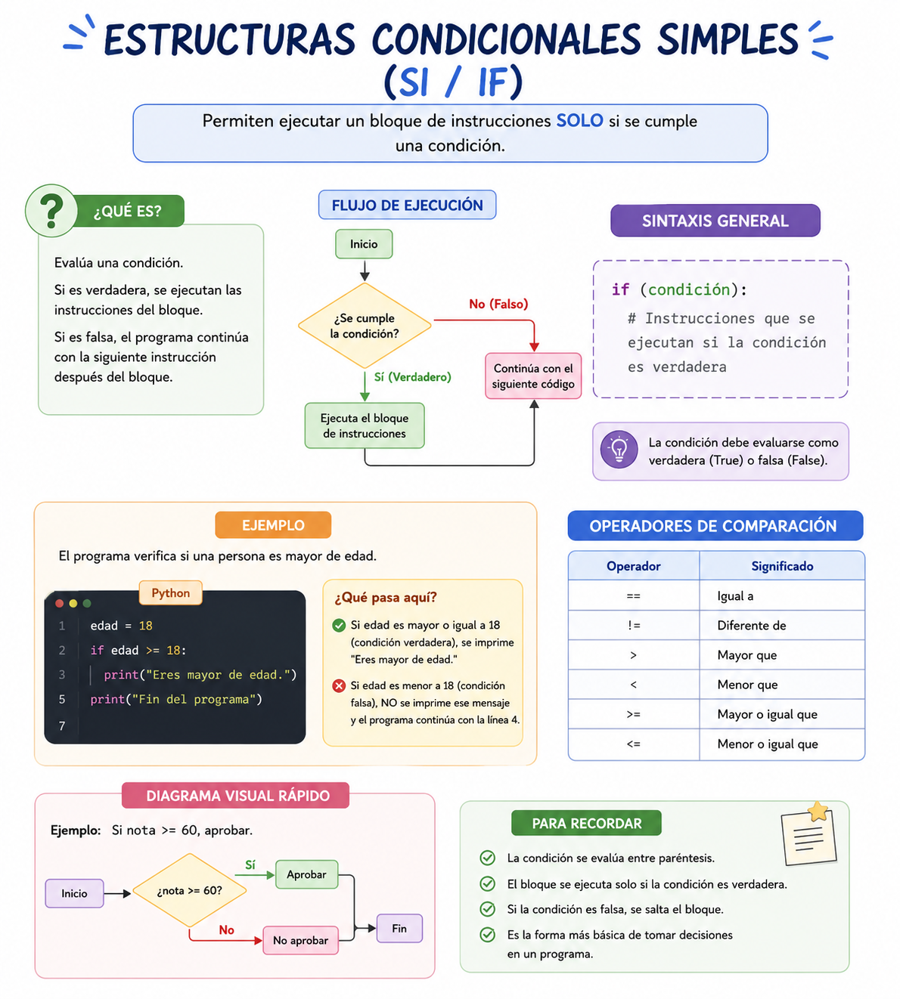
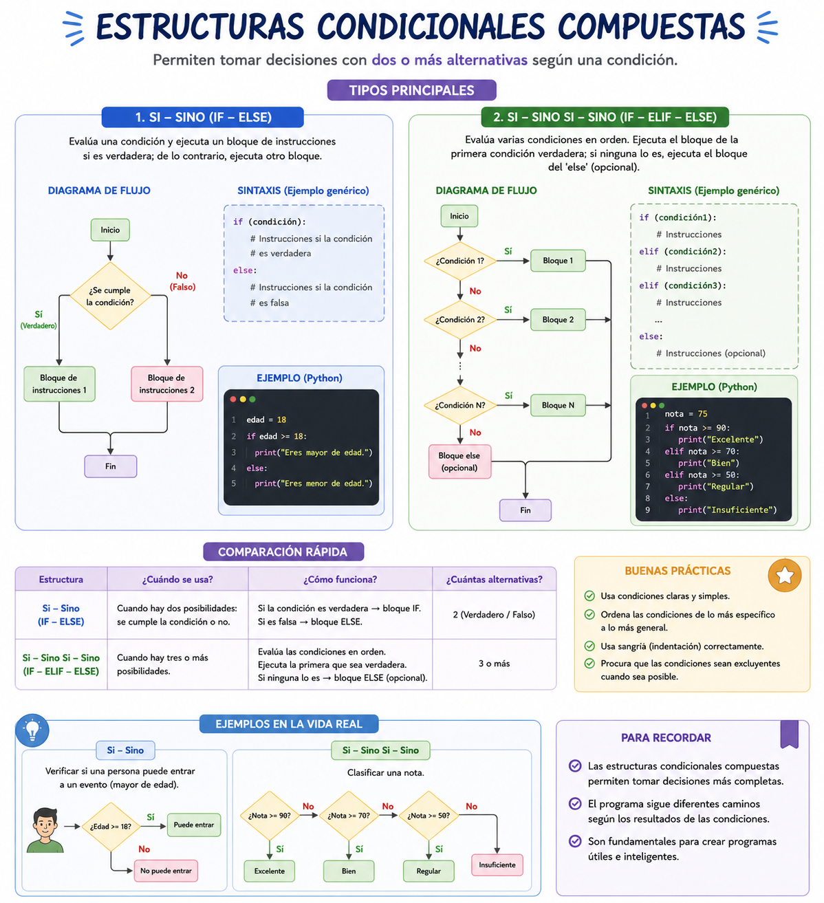

Cuando un automóvil moderno detecta que la temperatura exterior desciende a menos de 0 °C, activa automáticamente una alerta de congelamiento en el tablero. Si la temperatura es mayor, el sistema no hace absolutamente nada y el viaje continúa normal. Esto es una bifurcación condicional simple: un bloque de instrucciones que solo cobra vida si se cumple una premisa.
Imagina el sistema de autenticación de una nave o de cualquier plataforma web moderna. Cuando ingresas tu contraseña, el sistema evalúa una condición. Si la contraseña es correcta, te concede acceso al panel de control (Camino Verdadero). **Sino** (si es falsa), bloquea la terminal y muestra una alerta de intruso (Camino Falso). A diferencia de la condicional simple, aquí la computadora nunca se queda de brazos cruzados: siempre ejecutará una acción obligatoria para cualquiera de las dos alternativas.
🎥 Contenido Audiovisual
⚠️ Debes visualizar el video completo sin adelantar para desbloquear la evaluación.
Material audiovisual adaptado con fines estrictamente educativos. Créditos del autor: Retro.


14. Estructuras Condicionales Simples y Estructuras Condicionales Compuestas (Si-Entonces-Sino)
Las estructuras condicionales controlan la ramificación del flujo de un algoritmo. Permiten que un programa tome caminos alternativos en función del resultado (Verdadero o Falso) de una expresión relacional o lógica previamente evaluada.
Las estructuras condicionales compuestas permiten bifurcar el flujo de un algoritmo en dos caminos completamente excluyentes entre sí, asegurando el control absoluto del comportamiento del programa ante cualquier resultado lógico.
💡 Conceptos Clave y Definiciones Académicas:
Condicional Simple (Si-Entonces): Estructura de control que evalúa una condición booleana. Si el resultado es Verdadero, ejecuta un conjunto delimitado de instrucciones internas. Si es Falso, ignora por completo dicho bloque y el algoritmo continúa con la línea inmediatamente posterior al cierre de la estructura (Joyanes Aguilar, 2013).
Sintaxis Formal: En pseudocódigo se delimita de la siguiente forma:
Cláusula FinSi: Operador sintáctico indispensable encargado de delimitar la frontera de cierre de la bifurcación condicional.
Estructura Alternativa Compuesta: Modifica el flujo secuencial permitiendo elegir entre dos bloques de instrucciones posibles en función de que la condición sea verdadera o falsa (Joyanes Aguilar, 2013). Nunca se ejecutarán ambos bloques simultáneamente.
La Cláusula Sino (Else): Palabra reservada que delimita el inicio del bloque de instrucciones que se procesarán única y exclusivamente cuando la expresión lógica de la condición principal devuelva un valor falso.
📝 Evaluación
Demuestra tu dominio técnico sobre condicionales simples:
¿Qué tipo de valor debe arrojar obligatoriamente la condición de una estructura 'Si-Entonces'?
Un valor lógico (Verdadero o Falso).
Un número entero mayor a mil.
Una cadena de texto explicativa.
En una condición simple, ¿qué pasa con el bloque interno de instrucciones si la premisa es Falsa?
El programa se detiene lanzando un error fatal.
El bloque se ignora por completo y continúa con la secuencia exterior inferior.
El bloque se repite hasta volverse verdadero.
¿Cuál es el propósito del comando sintáctico `FinSi`?
Apagar el monitor al terminar el script.
Iniciar la lectura de una variable de entrada.
Delimitar con exactitud el cierre físico de las instrucciones condicionadas.
Si declaramos `Si saldo < 0 Entonces Imprimir "Alerta Deuda" FinSi`, y `saldo` vale 50, ¿qué se imprime?
No se imprime nada.
Se imprime "Alerta Deuda".
Se genera un error por saldo positivo.
¿Qué símbolo geométrico se utiliza en los diagramas de flujo para representar una estructura condicional?
Un rectángulo.
Un rombo.
Un ovalo.
¿Se pueden incluir operaciones matemáticas complejas dentro de un bloque condicional simple?
No, solo se permiten mensajes de texto.
Solo si la variable es de tipo carácter.
Sí, cualquier instrucción válida puede ejecutarse si se valida la condición.
¿Cuál es el operador de comparación utilizado para verificar si un número es estrictamente idéntico a otro?
El operador relacional `==` (o `=`)
El operador aritmético `+`
La palabra reservada Asignar
Un condicional simple se diferencia de uno doble porque el condicional simple:
No ocupa la palabra reservada Si.
Carece de una rama alternativa de acción explícita ('Sino').
Funciona sin consumir memoria del ordenador espacial.
¿Cuál es la principal diferencia operativa entre una condicional simple y una condicional compuesta?
La condicional compuesta puede evaluar más de tres variables a la vez en la misma línea.
La condicional simple detiene el programa en caso de error y la compuesta lo reinicia por completo.
La simple solo ejecuta acciones si la condición es verdadera; la compuesta garantiza una respuesta de instrucciones tanto si es verdadera como si es falsa.
Si un algoritmo evalúa la línea `Si (oxigeno < 20) Entonces Escribir "Alerta" Sino Escribir "Estable" FinSi`, y el nivel actual de oxigeno es 45, ¿qué se mostrará en la terminal?
Se imprimirá "Estable".
Se imprimirá "Alerta".
No se imprimirá nada porque la condición inicial falló.
¿Qué efecto operativo produce la Estructura Alternativa Compuesta en el flujo de un programa?
Fuerza la ejecución simultánea de todas las rutas del algoritmo para acelerar la CPU.
Modifica el flujo secuencial permitiendo elegir entre dos bloques de instrucciones posibles en función del valor booleano.
Borra los datos almacenados temporalmente en la memoria RAM de manera irreversible.
¿Qué define de forma estricta a la cláusula "Sino" (Else) en una condicional compuesta?
Es una palabra reservada que delimita las instrucciones que se procesarán única y exclusivamente cuando la condición principal sea falsa.
Es un comando que sirve para reiniciar los valores booleanos a un estado nulo.
Un operador matemático utilizado para calcular raíces cuadradas complejas.
Observando la sintaxis estructural descrita en el texto, ¿qué instrucción cierra formalmente la condicional compuesta?
FinSi
TerminarEstructura
SinoCierre
¿Qué término abre formalmente la secuencia subordinada tras evaluar la veracidad de la condición?
Entonces
Mientras
RepetirHasta
❌ Incorrecto. La estructura formal dicta la secuencia sintáctica exacta: Si [Condición] Entonces.